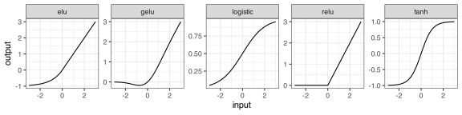
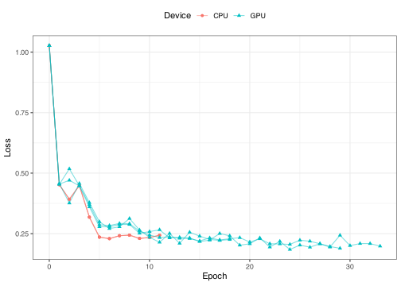
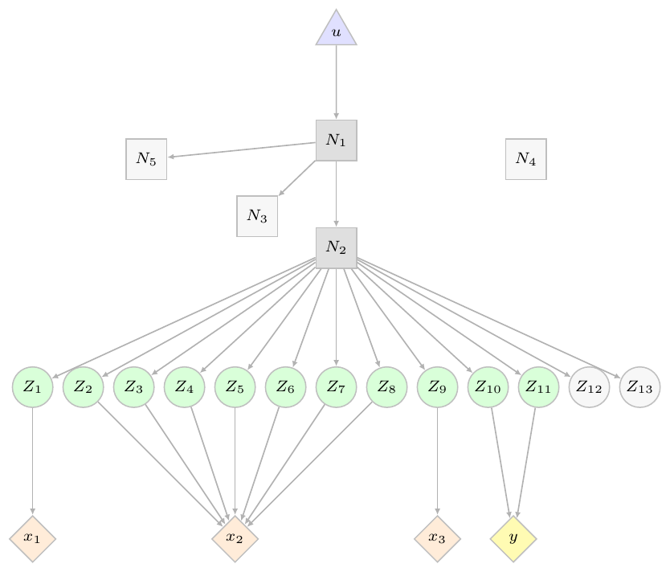
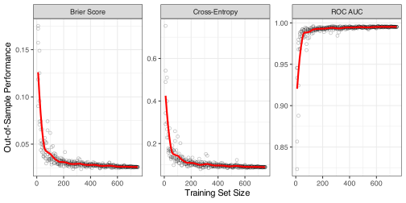
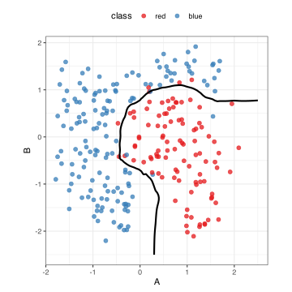

Deep Learning and Foundational Models for Tabular Data in R
R/Pharma 2026
Max Kuhn
Posit PBC
Agenda
- Package installs
- Classical neural networks: multilayer perceptrons
- Modern neural networks architectures
- Foundational models
Packages
We will use a few packages and will need devel versions of a few.
Classical neural networks
The traditional structure of a neural network is the multilayer perceptron (MLP).
One or more hidden layers.
These are feed-forward models, meaning each layer connects only to the next layer.
Multilayer perceptrons

Connections often use nonlinear activation functions for \sigma(\cdot).
Activation Functions
There are many nonlinear functions. Historically, a logistic/sigmoid was popular, but Restricted Linear Units (ReLU) and its variants are mostly used.

Multilayer perceptrons
- High maintenance
- Lots of preprocessing.
- Severely sensitive to non-informative predictors.
- Training large networks can be expensive.
- Requires extensive tuning
- Sensitive to initial (random) parameters
- Need GPU for complex models
- Accurate but probably not well-calibrated. Perfectly capable of overfitting
- Can be highly performant but often not optimal (compared to boosting)
Simple example
Simple example
Initial fit
Did the model converge?
Prediction
# prediction:
grid_mlp <- augment(init_mlp, new_data = cls_grid)
grid_mlp |> slice_head(n = 5)
#> # A tibble: 5 × 5
#> .pred_class .pred_red .pred_blue A B
#> <fct> <dbl> <dbl> <dbl> <dbl>
#> 1 blue 7.18e-10 1 -2.5 -2.5
#> 2 blue 8.35e-10 1 -2.5 -2.45
#> 3 blue 9.71e-10 1 -2.5 -2.40
#> 4 blue 1.13e- 9 1 -2.5 -2.35
#> 5 blue 1.31e- 9 1 -2.5 -2.30Training set fit
Tuning with tidymodels
Modern archeticures
Modern architectures
There are a variety of tools that have trickled from image-based neural networks to tabular data models:
- Residual connections
- In-network normalizations
- Attention
Deeper and more complex models can do well with a large amount of training data.
This requires more intensive computations (and a GPU)
Helping gradient descent
Residual connections and normalization are often used together.
They help solve vanishing or exploding gradients.
\overbrace{ \begin{aligned} \boldsymbol{H}_1 &= f_1(\boldsymbol{x}) \notag \\ \boldsymbol{H}_2 &= f_2(\boldsymbol{H}_1) \notag \\ \boldsymbol{H}_3 &= f_3(\boldsymbol{H}_2) \notag \\ \boldsymbol{Y} &= f_4(\boldsymbol{H}_3) \notag \end{aligned} }^{\text{Standard MLP}} \qquad \overbrace{ \begin{alignedat}{3} \boldsymbol{H}_1 &{}={} & f_1(\boldsymbol{x}) &{}+{} &\boldsymbol{x} \notag \\ \boldsymbol{H}_2 &{}={} & f_2(\boldsymbol{H}_1) &{}+{} &\boldsymbol{H}_1 \notag \\ \boldsymbol{H}_3 &{}={} & f_3(\boldsymbol{H}_2) &{}+{} &\boldsymbol{H}_2 \notag \\ \boldsymbol{Y} &{}={} & f_4(\boldsymbol{H}_3) \notag \end{alignedat}}^{\text{Residual Connections}}
About GPUs
As model and/or data sizes increase, you need a GPU for computation.
There are two main GPU computational frameworks:
Most of the focus is on CUDA instructions, but MPS works very well (outside of a few bugs).
We mostly use (R) torch, and it enables a device argument with values "cpu", "cuda", or "mps". There are a few exceptions.
About GPUs
Computations may be difficult to replicate when using the GPU. torch::torch_manual_seed() can help control things.
You can run explicit (i.e., multiprocess) parallel processing with a GPU, but it is very important to ensure that there is enough GPU memory to send simultaneous jobs at once.
Unlike CPUs, GPUs are not as fault-tolerant when resources are overwhelmed.
For small-to-medium data sets, it might be faster to use the CPU ¯\(ツ)/¯
ResNet Fit
set.seed(7826)
resnet_fit <- brulee_resnet(
class ~ A + B,
data = cls_tr,
hidden_units = c(6, 2, 6), # multiple layers
residual_at = 1:2, # residual after these layers
learn_rate = 0.01,
epochs = 100,
stop_iter = 5,
batch_size = 32,
method = "SGD",
device = "cpu" # default; results are different w/gpu, see below
)The tabby package enables tuning via tabular_resnet()
ResNet Fit
CPU versus GPU (3 runs each)

Time per epoch for this data set:
- 0.36 for CPU
- 1.2 for GPU
I set the R and torch seeds each iteration.
Global and local models in drug discovery
For many nonclinical assays, in silico models are usually built for medicinal chemists to use for prediction.
For assays applicable everywhere (e.g., ADME, toxicology, etc.), global models across all programs and therapeutic areas are used.
However, for some new projects with HTS hits, local computational chemistry models are created from very small data sets of highly relevant compounds.
These small models are believed to be better since they have the correct context for their program.
Attention
This method improves specific predictions made with very large neural networks trained on extremely disparate training set points.
Attention helps focus internal embeddings, biasing the network toward the relevant parts. For example, attention can address the question:
“Which other rows are most similar to me, and how should they influence my representation?”
“Local” becomes specific to the data that you are predicting.
Attention Types
For tabular data, we can compute column- and/or row-attention.
During training:
- Column attention takes the data in the current batch, and computes new embeddings per feature and across data points.
- Row attention adjusts the embeddings for each row and across embedding columns.
At prediction time, it estimates no new parameters. The predictions are influenced by the other rows being predicted.
SAINT
SAINT is a deep learning model that alternates between column and row attention.
- The size of an attention head is how many simultaneous attention computations are being computed (“width”)
- An attention block is a set of sequential heads that are executed (“depth”).
SAINT Fit
set.seed(7826)
saint_fit <-
brulee_saint(
class ~ A + B,
data = cls_tr,
num_embedding = 20, # Ok, I admit that I used the tabby and tune packages
hidden_units = 20, # to find this combination of parameters. It took a
num_attn_heads = 8, # long time to run.
num_attn_blocks = 4,
learn_rate = 0.005, # learn_rate and dropout for hidden units were
dropout_hidden = 0, # unusually low for these data.
epochs = 100,
stop_iter = 10,
batch_size = 16,
method = "SGD",
device = "mps"
)The tabby package enables tuning via tabular_saint()
SAINT Fit
Foundational Models
Foundational models
Normally we fit a neural network to a training set. Then we can use it to make predictions.
Foundational neural networks are very large pretrained models (about 108 parameters) that we can use for prediction.
How are they trained?
Simulated random data
The networks treat the entire dataset as a training set point and use millions of training points.
Where do the training data come from?
They are simulated with a Structural Causal Models (SCMs).
Random data sizes/types, latent variables, nonlinear transforms, and other quantities are drawn from prior distributions.
An example SCM.
A random graph with 5 nodes and connections.
Each node adds a layer of complexity, nonlinear relationships, transformations, etc.
Latent variables (Z_j) comprise a multivaraite distribution and these create our obsedrved columns.
This process is done XX,000,000 times during training.

Predictions
We still need a “training set” to trigger in-context learning (ICL). This happens via many iterations of attention.
This lets the foundational model focus on the parts of the vast network most appropriate for our data.
The training set and prediction samples are passed in at the same time, but predictions are reported for the latter.
These models perform remarkably well.
Models
There are different tabular foundational models. The two leading models are TabPFN and TabICL. Their results are very similar.
More are popping up all the time.
- The tabpfn package serves that model via reticulate
- brulee has an R torch implementation
brulee_tab_icl()
Original implementations are in Python.
We’ll focus here on TabICL since TabPFN requires a license key.
TabICL “fit”
How much data before ICL kicks in?

Notes on foundational models
- They appear to be highly resistant to non-informative predictors.
- Regression models can also make quantile predictions.
- The default models use ensembles of 8 different estimators
- The model noise is low, and the ensemble does not buy much.
- TabPFN has a very rapid development cycle. Improvements come out every few months.
- There are foundational models specific to time series forecasting.
- TabICL has one and Amazon created chronos2 (also avalable in brulee)
TabICL test results
cls_mtr <- metric_set(brier_class, roc_auc, mn_log_loss)
icl_test_pred <- augment(icl_fit, cls_te)
icl_test_pred |> cls_mtr(class, .pred_red)
#> # A tibble: 3 × 3
#> .metric .estimator .estimate
#> <chr> <chr> <dbl>
#> 1 brier_class binary 0.0258
#> 2 roc_auc binary 0.995
#> 3 mn_log_loss binary 0.0894TabICL test results

References
General
Vaswani, A, N Shazeer, N Parmar, J Uszkoreit, L Jones, A Gomez, Ł Kaiser, and I Polosukhin. 2017. “Attention Is All You Need.” Advances in Neural Information Processing Systems 30.
Gorishniy, Y, I Rubachev, V Khrulkov, and A Babenko. 2021. “Revisiting Deep Learning Models for Tabular Data.” Advances in Neural Information Processing Systems 34: 18932–43.
Shwartz-Ziv, R, and A Armon. 2022. “Tabular Data: Deep Learning Is Not All You Need.” Information Fusion 81: 84–90.
References
ResNet
He, K, X Zhang, S Ren, and J Sun. 2016. “Deep Residual Learning for Image Recognition.” In Proceedings of the IEEE Conference on Computer Vision and Pattern Recognition, 770–78.
Gorishniy, Y, I Rubachev, V Khrulkov, and A Babenko. 2021. “Revisiting Deep Learning Models for Tabular Data.” Advances in Neural Information Processing Systems 34: 18932–43. (see Eq 2)
SAINT:
- Somepalli, G, M Goldblum, A Schwarzschild, B Bruss, and T Goldstein. 2021. “Saint: Improved Neural Networks for Tabular Data via Row Attention and Contrastive Pre-Training.” arXiv Preprint arXiv:2106.01342.
References
TabICL:
Qu, J, D Holzmuller, G Varoquaux, and M Morvan. 2025. “TabICL: A Tabular Foundation Model for in-Context Learning on Large Data.” arXiv Preprint arXiv:2502.05564.
Qu, J, D Holzmuller, G Varoquaux, and M Morvan. 2026. “TabICLv2: A Better, Faster, Scalable, and Open Tabular Foundation Model.” arXiv Preprint arXiv:2602.11139.
References
TabPFN:
Müller, S, N Hollmann, S Arango, J Grabocka, and F Hutter. 2021. “Transformers Can Do Bayesian Inference.” arXiv Preprint arXiv:2112.10510.
Hollmann, N, S Müller, K Eggensperger, and F Hutter. 2022. “TabPFN: A Transformer That Solves Small Tabular Classification Problems in a Second.” arXiv Preprint arXiv:2207.01848.
Hollmann, N, S Müller, L Purucker, A Krishnakumar, M Körfer, S Hoo, R Schirrmeister, and F Hutter. 2025. “Accurate Predictions on Small Data with a Tabular Foundation Model.” Nature 637 (8045): 319–26.
Grinsztajn, L, K Flöge, O Key, F Birkel, P Jund, B Roof, M Manium, et al. 2026. “TabPFN-3: Technical Report.” arXiv Preprint arXiv:2605.13986.